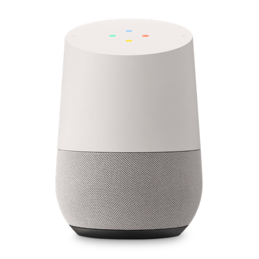

Cost
A smart grid, through its applications, can, in real time, collect, record and analyze data on the status of the smart components and their performance in order to coordinate the generation, transmission, distribution and consumption of electrical energy. They are capable of monitoring and managing electricity with the aim of improving the efficiency, reliability, sustainability and security of the supply itself.Security vulnerabilities
While it may seem basic due to the reason for its creation, IoT makes tasks like cleaning a house easier and more efficient, shifting activities that used to be performed entirely by humans to automated solutions. This frees up time for humans to engage in other activities.
Privacy
The cornerstone of this concept is that physical objects can be connected to a network where they previously couldn't, providing access to all their capabilities. This facilitates real-time data transfer and communication between devices and people.
